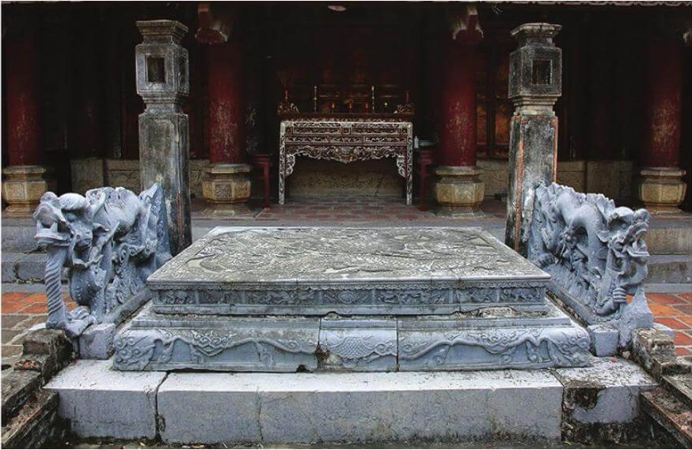
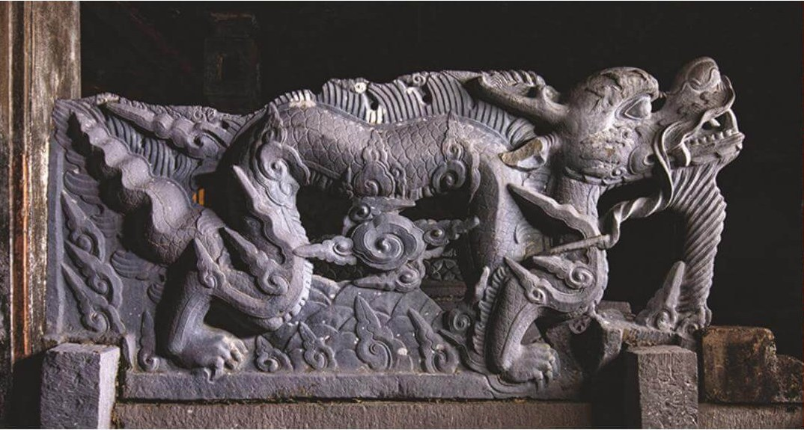

CỐ ĐÔ HOA LƯ
Lit du Dragon dans la cour du temple Đinh

Le Lit du Dragon (Long Sàng) en pierre, datant du XVIIe siècle, a été reconnu Trésor national par décision du Premier ministre en 2017.
Ce Lit du Dragon n'est pas le lit du roi, mais un objet rituel sacré, servant d'endroit pour préparer ou disposer solennellement les offrandes à présenter.
Grâce à un art de la sculpture à son apogée, les artisans ont insufflé une âme à ces blocs de pierre bruts, les transformant en une œuvre d'art atteignant un niveau de maîtrise technique absolue. Au centre du Lit du Dragon se trouve l'image d'un grand dragon mythique au corps rebondi, aux écailles simples et aux flammes en forme de hallebarde. L'image du dragon ici ne symbolise pas seulement le pouvoir royal suprême, mais porte également une profonde signification spirituelle, celle de prier pour un climat clément et des récoltes abondantes.

Le pourtour du Lit du Dragon est orné de motifs finement sculptés liés à la vie aquatique, tels que deux dragons se tournant vers des nuages en spirale, ou encore des poissons et des crevettes. Le point culminant et le plus distinctif de ce trésor réside dans sa stylisation profondément anthropomorphique : entre les griffes acérées traditionnelles, l'artisan a habilement sculpté l'image de mains humaines d'un grand réalisme. Pour lui conférer une allure majestueuse, l'artisan a sculpté de part et d'autre du Lit du Dragon deux dragons se faisant face en forme de selle de cheval. Cette combinaison donne au Lit du Dragon l'aspect d'un trône, lui conférant majesté et révérence.

Ce Lit du Dragon est considéré par les chercheurs comme l'objet unique et le plus représentatif de l'art de la sculpture d'autels au Vietnam. Chaque trait gravé dans la pierre ne se contente pas d'esquisser un tableau vivant de la nature, mais exprime également l'aspiration humaine à une vie d'abondance et à la prolifération de toutes choses.